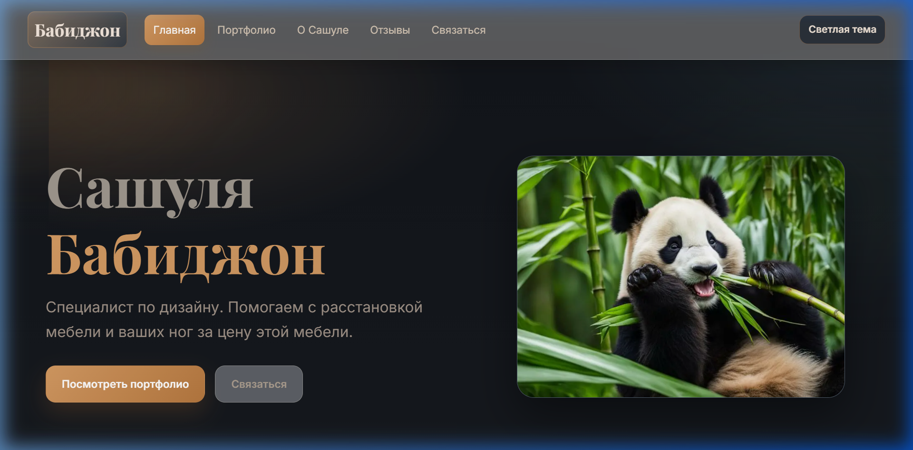
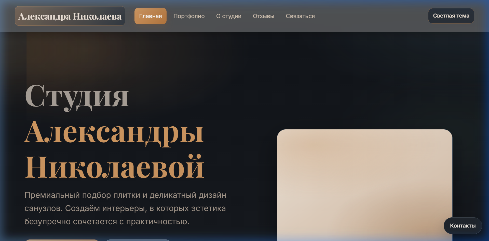

Версия 2
Sashnaz v2
Эволюция структуры и UI по сравнению с базовой версией. Новый визуальный язык и адаптивная сетка.
- HTML5
- CSS Grid
- Анимации
Портфолио
Реальные кейсы — от ранних прототипов до финальных продуктов.
Каждый проект создан по
принципу: скорость,
эстетика, результат.
Показаны все проекты.

Версия 2
Эволюция структуры и UI по сравнению с базовой версией. Новый визуальный язык и адаптивная сетка.

Версия 3
Улучшенная подача контента и расширенная визуальная часть.

Версия 4 / Финал
Финальная версия с выверенной структурой и аккуратным дизайном.

Особый проект Special Case
Отдельный проект с уникальной подачей контента и нестандартной компоновкой.